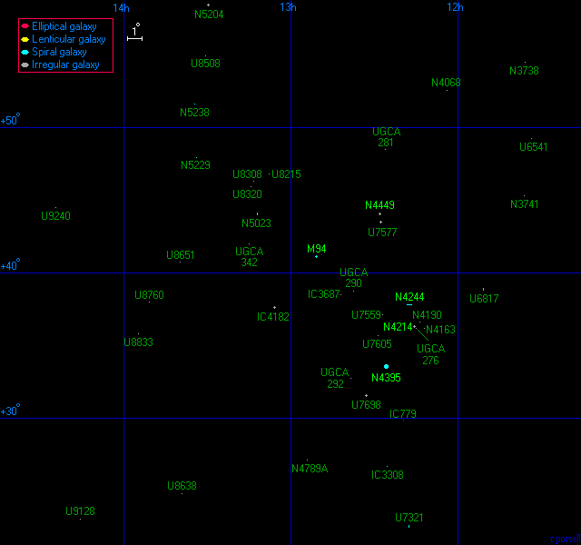
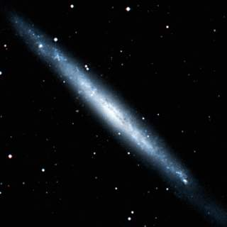
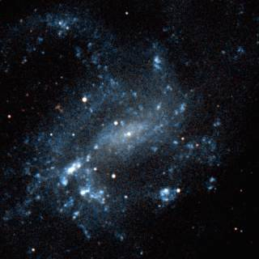
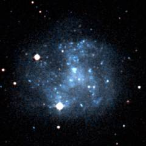
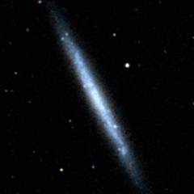
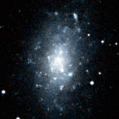

تجمع (السلوقيان I) كانيس I هو تجمع مجري قريب آخر، على الرغم من أنه لا يحتوي على العديد من المجرات البارزة. هناك العديد من المجرات في منطقة كوكبة السلوقيان (Canes Venatici) في السماء، ولم تصبح تقديرات المسافات دقيقة بما يكفي للتمييز بين مجرات تجمع كانيس I والمجرات الخلفية العديدة في هذه المنطقة إلا مؤخرًا.

أدناه - أكبر مجرتين في تجمع كانيس I. (على اليمين) NGC 4244 هي مجرة حلزونية ذات حافة، ويبلغ قطرها حوالي 65000 سنة ضوئية، وهي أكبر مجرة في التجمع. (على اليسار) NGC 4395 هي مثال (خافت جدًا) لمجرة سيفرت، مما يعني أن لديها نواة نقطية لامعة (تحتوي على ثقب أسود فائق الكتلة يبلغ كتلته بضعة آلاف من كتل الشمس).
 |
 |
| NGC 4244 | NGC 4395 |
هذه قائمة بأهم المجرات في تجمع كانيس I. لا توجد مجرات كبيرة بشكل خاص في هذا التجمع، ولكنه يحتوي على العديد من المجرات القزمة متوسطة الحجم بأقطار تتراوح بين 5 إلى 25 ألف سنة ضوئية.
| الاسم | الإحداثيات الاستوائية مطلع مستقيم RA ميل Dec |
القدر الأزرق | النوع | الحجم الزاوي دقائق قوسية(′) |
الحجم (ألف سنة ضوئية) |
سرعة التقهقر (كم/ث) |
أسماء أخرى | |
|---|---|---|---|---|---|---|---|---|
| UGC 6541 | 11 33.5 | +49 14 | 14.5 | Irr | 1.2 | 5 | 455 | - |
| NGC 3738 | 11 35.8 | +54 31 | 12.1 | Irr | 2.5 | 10 | 406 | - |
| NGC 3741 | 11 36.1 | +45 17 | 14.6 | Irr | 2.0 | 10 | 454 | - |
| UGC 6817 | 11 50.8 | +38 52 | 13.4 | Irr | 4.1 | 15 | 497 | DDO 99 |
| NGC 4068 | 12 04.0 | +52 35 | 14.1 | Irr | 3.3 | 15 | 394 | - |
| NGC 4163 | 12 12.1 | +36 10 | 14.5 | Irr | 1.8 | 5 | 423 | - |
| NGC 4190 | 12 13.7 | +36 38 | 14.0 | Irr | 1.7 | 5 | 487 | - |
| UGCA 276 | 12 14.9 | +36 13 | 18? | Irr | 1.0 | 5 | 542 | DDO 113 |
| NGC 4214 | 12 15.6 | +36 19 | 10.2 | Irr | 8.5 | 30 | 548 | - |
| NGC 4244 | 12 17.5 | +37 48 | 11.1 | Sc | 16.6 | 65 | 493 | - |
| UGC 7321 | 12 17.5 | +22 32 | 14.1 | Scd | 5.5 | 20 | 715 | - |
| IC 779 | 12 19.6 | +29 53 | 15.4 | E | 1.0 | 5 | 560 | - |
| IC 3308 | 12 25.3 | +26 42 | 16.4 | Scd | 1.3 | 5 | 605 | - |
| NGC 4395 | 12 25.9 | +33 32 | 11.4 | SBd | 13.2 | 50 | 585 | - |
| UGCA 281 | 12 26.2 | +48 29 | 15.4 | Irr | 0.8 | 5 | 481 | - |
| UGC 7559 | 12 27.1 | +37 08 | 14.2 | Irr | 3.2 | 10 | 468 | DDO 126 |
| UGC 7577 | 12 27.6 | +43 29 | 12.9 | Irr | 4.3 | 15 | 418 | DDO 125 |
| NGC 4449 | 12 28.2 | +44 05 | 10.1 | Irr | 6.2 | 25 | 422 | - |
| UGC 7605 | 12 28.7 | +35 42 | 14.8 | Irr | 1.1 | 5 | 563 | - |
| UGC 7698 | 12 32.9 | +31 32 | 13.1 | Irr | 6.5 | 25 | 602 | DDO 133 |
| UGCA 290 | 12 37.4 | +38 45 | 15.7 | Irr | 0.4 | 2 | 694 | - |
| UGCA 292 | 12 38.4 | +32 46 | 16.1 | Irr | 1.0 | 5 | 571 | CVn Dwarf A |
| IC 3687 | 12 42.2 | +38 30 | 13.7 | Irr | 3.4 | 15 | 597 | DDO 141 |
| M94 | 12 50.9 | +41 07 | 8.8 | Sab | 11.2 | 40 | 532 | NGC 4736 |
| NGC 4789A | 12 54.1 | +27 09 | 14.1 | Irr | 3.0 | 10 | 648 | UGC 8024 |
| IC 4182 | 13 05.8 | +37 36 | 12.5 | Sm | 6.0 | 25 | 546 | - |
| UGC 8215 | 13 08.0 | +46 49 | 17? | Irr | 1.0 | 5 | 408 | - |
| NGC 5023 | 13 12.2 | +44 02 | 12.8 | Sc | 6.0 | 25 | 607 | - |
| UGC 8308 | 13 13.4 | +46 19 | 18.8 | Irr | 1.1 | 5 | 356 | DDO 167 |
| UGC 8320 | 13 14.5 | +45 55 | 12.7 | Irr | 3.6 | 15 | 385 | DDO 168 |
| UGCA 342 | 13 15.1 | +42 00 | 17? | Irr | 1.6 | 5 | 593 | - |
| NGC 5204 | 13 29.6 | +58 26 | 11.7 | Sm | 5.0 | 20 | 329 | - |
| UGC 8508 | 13 30.8 | +54 55 | 14.8 | Irr | 1.7 | 5 | 204 | - |
| NGC 5229 | 13 34.1 | +47 55 | 14.7 | SBcd | 3.3 | 15 | 535 | - |
| NGC 5238 | 13 34.7 | +51 37 | 14.3 | Sd | 1.7 | 5 | 388 | - |
| UGC 8638 | 13 39.3 | +24 47 | 15.1 | Irr | 1.2 | 5 | 523 | - |
| UGC 8651 | 13 39.9 | +40 44 | 14.5 | Irr | 2.3 | 10 | 399 | DDO 181 |
| UGC 8760 | 13 50.9 | +38 01 | 14.4 | Irr | 2.2 | 10 | 391 | DDO 183 |
| UGC 8833 | 13 54.8 | +35 50 | 15.2 | Irr | 0.9 | 5 | 431 | - |
| UGC 9128 | 14 15.9 | +23 03 | 14.7 | Irr | 1.7 | 5 | 371 | DDO 187 |
| UGC 9240 | 14 24.7 | +44 31 | 13.6 | Irr | 1.8 | 5 | 301 | DDO 190 |
العمود 1: الاسم المعتاد للمجرة.
العمود 2: إحداثيات المطلع المستقيم والميل لعام 2000.
العمود 3: القدر الظاهري الأزرق للمجرة.
العمود 4: نوع المجرة: E=بيضاوية، S0=عدسية، Sa,Sb,Sc,Sd=حلزونية، SBa,SBb,SBc,SBd=حلزونية ذات قضيب، Sm,SBm,Irr=غير منتظمة.
العمود 5: الحجم الزاوي للمجرة (دقيقة قوسية).
العمود 6: قطر المجرة (بالآلاف من السنوات الضوئية).
العمود 7: السرعة الإنزياحية للمجرة (كم/ث) بالنسبة إلى إشعاع الخلفية الكونية الميكروي.
العمود 8: أسماء أخرى للمجرة.
Karachentsev I, Sharina M, Dolphin A, E. Grebel K, Geisler D, Guhathakurta P, Hodge P,
Karachentseva V, Sarajedini A, Seitzer P, (2003), Galaxy Flow in the Canes
Venatici I Cloud. Astron Astrophys, 398, 467.
Sharina M, Karachentsev I, Tikhonov N, (1999), Distances to eight nearby isolated
low-luminosity galaxies. Astron Lett, 25, 322.
Makarova L, Karachentsev I, Takalo L, Heinaemaeki P, Valtonen M, (1998), Detailed
images and distance measurements for eighteen dwarf irregular galaxies in the
Canes Venatici cloud. Astron Astrophys Supp, 128, 459.
Makarova L, Karachentsev I, Georgiev Ts, (1997), Distances to six irregular galaxies
in the Canes Venatici cluster from the brightest stars. Astron Lett, 23, 378.
Schmidt K, Priebe A, Boller T, (1993), Nearby Galaxies. Astron Nachr, 314, 371.
The HyperLeda Database, (2003).
أدناه - ثلاث مجرات أخرى في تجمع كانيس I. IC 4182 (على اليسار) هي مجرة غير منتظمة مع علامات خافتة فقط على البنية الحلزونية. NGC 5023 (في الوسط) هي على الأرجح مجرة حلزونية صغيرة ذات حافة. NGC 5204 (على اليمين) هي مجرة غير منتظمة تقع على حدود تجمع كانيس I وتجمع M81 المجري القريب.
 |
 |
 |
| IC 4182 | NGC 5023 | NGC 5204 |
| خصائص تجمع (السلوقيان I) كانيس I | ||
|---|---|---|
| الإحداثيات الاستوائية | RA=13h00m | Dec=+40° |
| الإحداثيات المجرية | l=115° | b=+75° |
| الإحداثيات المجرية الفائقة | L=75° | B=+10° |
| المسافة إلى مركز المجموعة المجرية | 13 مليون سنة ضوئية | |
| عدد المجرات الكبيرة في المجموعة | 4 | |
| أسماء أخرى للتجمع | تجمع M94 | |